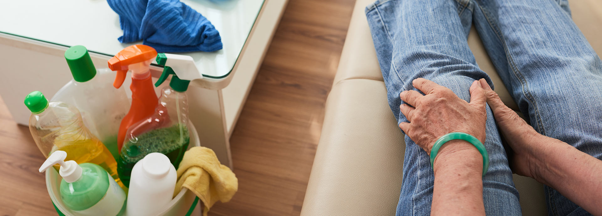
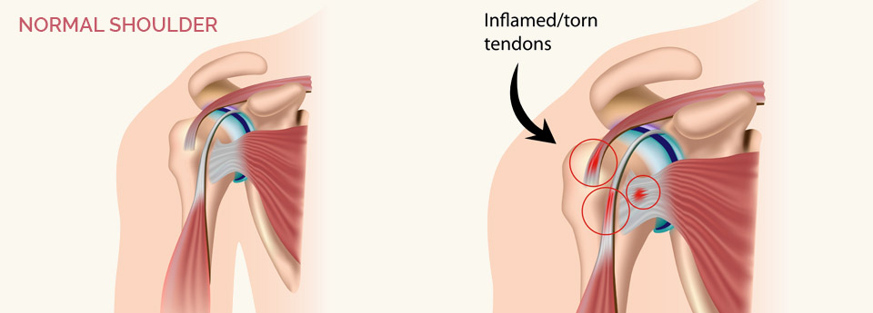
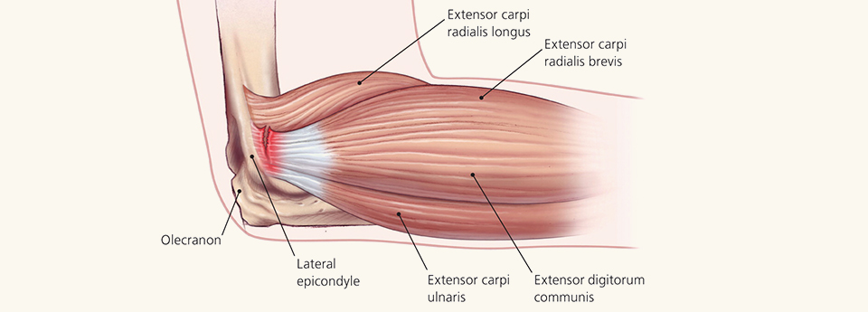
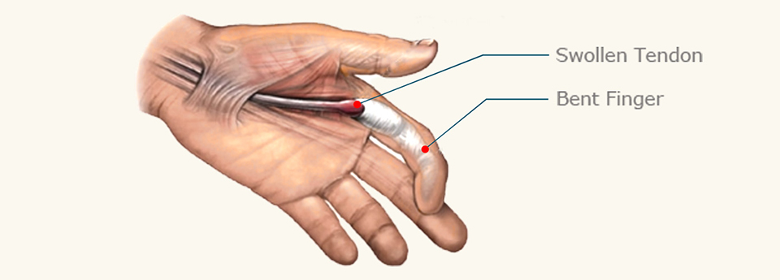
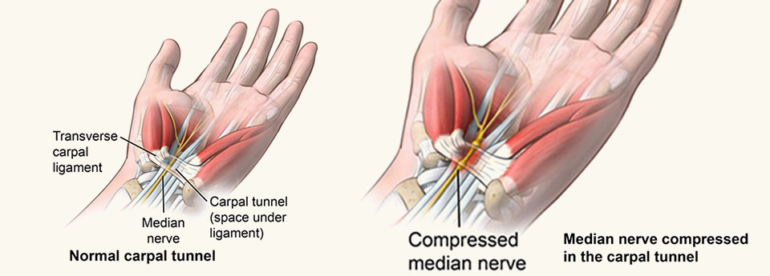
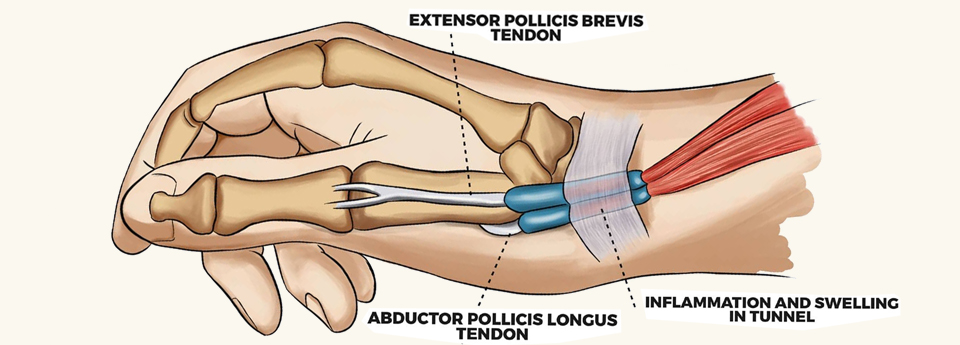
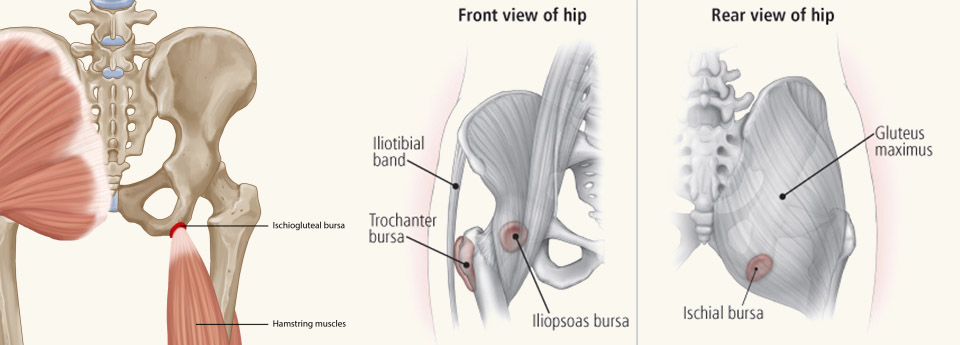
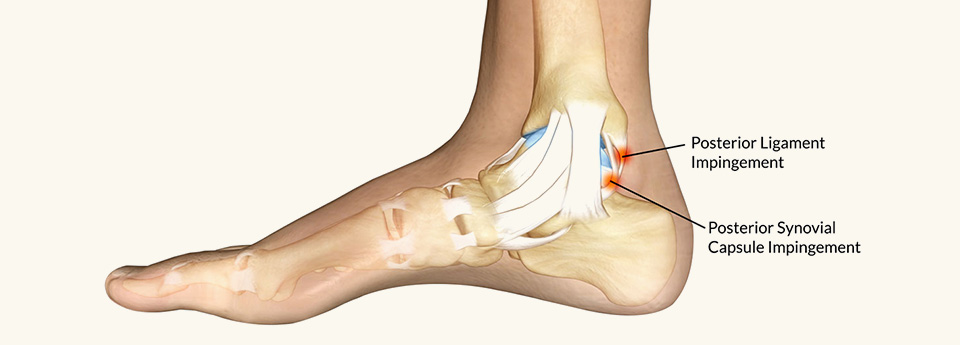

හැඳින්වීම

ගෙල ප්රදේශයේ වේදනාව

මෙම කරණය ඔබට තේරුම් ගැනීම පහසුකිරීමට ගෙලෙහි පිහිටීම සරලව සඳහන් කරන්නම්. මුලින්ම ගෙලෙහි සැකිල්ල, ඒ කියන්නේ කශේරුව, මගින් උරස ප්රදේශය හිසට සම්බන්ද කරනවා. ගෙලාහි කශේරුව තුල කශේරුකා 7 ක් පිහිටනවා. මෙම කශේරුකා එකි නෙක සම්බන්ද වන්නේ ඒවා අතර පවතින කුඩා සංදී මගින්. ගෙල හරවිමකදී හෝ නමන විට මේවා ක්රියාත්මක වෙනවා. කශේරුකා දෙකක් අතර disc තියනවා. ඒවායේ අන්තර්ගතය ගනකම් ජෙල් ස්වරුපයක් ගන්නවා. කශේරුකා තුල ඇති නාලය තුලින් ශුෂුමනාව පහලට ගමන් කරන අතර ඉන් ගෙල කොටසේදී ආරම්භ වන ස්නායු කශේරුකා අතරින් පිටතට පැමිණ ඇත දක්වා ගමන් කරනවා. කශේරුකා අතර ඒවා ඇද බැඳ තබා ගන්නා බන්දනී රාශියක් පිහිටිමෙන් කශේරුකාව තව දුරටත් ශක්තිමත් කරනවා. මෙම සැකිල්ලට පිටතින් බෙල්ලේ පේශින් පිහිටනවා. පේශි වලින් හිස හැරවීමට, නැමීමට, ගෙල හැරවීමට හා නැමීමට උපකාරී වෙනවා. කශේරුකාවෙන් පිරතට පැමිණි ස්නායු පේශි අතරින් පිටතට පමිනේනව. කශේරුවට ඉදිරි පසින් ගල නාලය, ස්වාස නාලය පිහිටනවා. හිසට රුධිරය රැගෙන යන සහ එන රුධිර වාහිනී එම නාල දෙපසින් පිහිට තිබෙනවා. තයිරොයිඩ් ග්රන්ථිය මේ සියල්ලටම එදිරියෙන් පවතිනවා. මේ සියල්ල සමෙන් ආවරණය වෙලා ගෙලෙහි ස්වරුපය ලබා දෙනවා. ගෙලේ හටගන්නා වේදනාවන් ඉහත සඳහන් කල ඕනෑම පටකයකින් හට ගත හැක. මින් පේශි වලින් හටගන්නා වේදනාව සුලබයි. ගෙල වෙහෙසට පත් කරන ඉරියව්, නින්දේදී ගෙල තෙරපීමට ලක්වීම, තැලීම් මේ සඳහා හේතු වෙනවා. හිස හැරවීම අපහසු වීම හා හිස එක් දිශාවකට හරි පිහිටීම මෙහි ලක්ෂණයි. ප්රතිකාර ලෙස විවේකය, ආලේපන, සම්භාහනය, වේදනා නාශක ලබා දේ. සමහර අවස්ථාවල කොලරයක් පැලඳීමටද උපදෙස් දේ. මෙය දින කිහිපයකින් පහව යා යුතුයි. 512 ස්නායු කශේරුවෙන් පිටතට පැමිණෙන සියුම් විවරයන්ගේ ඉඩ ඇහිරී යාම නිසා, ස්නායු තෙරපීමට ලක්වේ. එවිට ඇතිවන වේදනාව අත දිගේ පහලට ගමන් කරන ආකාරයක් ලෙස අපට තේරුම් යනවා. තෙරපීම උත්සන්න වන විට මෙය හිරි ගතියකට හෝ අතේ ශක්තිමත් බව අඩු ගතියක් ලෙස දැනීමට හැක. මිට අමතරව අමතර ඉල ඇටයක් ගෙලේ පහල කොටසේ පිහිටිමෙනුත් ස්නායු තෙරපීමක් ඇතිවිය හැකියි. කශේරුවේ ඇති කුඩා සන්දිවල ඇතිවන ප්රදාහය, හන්දි වල නිතර ඇතිවන ප්රදාහය නිසා හන්දිවල ස්වරුපය වෙනස්වීම, ඉදිමීම නිසා ඇතිවන වේදනාව ගෙලෙහි පිටිපස දෙසින් දැනෙන අතර එය ගෙලෙහි චලන සීමා කරයි. මිට අමතරව කුජ්ජට ඉදිමීම, කනේ අසාදන, උරහිසේ වේදනා ද ගෙලෙහි වේදනාවක් ලෙස ඔබ වැටහා ගත හැකියි.
උරහිස හා ඒ අවට වේදනාවන්
වයස අවුරුදු 40 අවට කාන්ත හා පිරිමි දෙපාර්ශවයටම හා දියවැඩියා රෝගීන්ට වැඩිමනක්ම උරහිස අවට වේදනාව නිසා අත උරහිස මට්ටමින් ඉහලට එසවීමට අපහසුතාවය ඇතිවේ. මෙයට හේතුන් රාශියක් බලපාන අතර උරහිස සංදීහි අභ්යන්තර ආවරණයේ ඇතිවන ගනවීම් , කැල්සියම් තැන්පත්වීම, පේශි වල ගනවීම් හා ඒවා ක්රියාකාරී වන කුහර වල ඉඩ ඇහිරියාම සුලබව දක්නට ලැබේ. තවත් සමහරකගේ හන්දිය ආශ්රිත පටක ප්රදාහයට ලක්වීම හා සංදී ප්රදාහය නිසාද මේ තත්වය උද්ගතවේ. සන්දිය පරිෂාකර බැලීමෙන්, X-ray හා ස්කෑන් පරීක්ෂණයක් මගින් රෝගය නිසිලෙස හදුනාගත හැක. මේ සඳහා ප්රතිකාර ලෙස පෙති වර්ග, ආලේපන, බෙහෙත් නික්ෂේපන, කිරණ ප්රතිකාර හා ව්යායාම් මුලිකව භාවිත කරනු ලැබේ. මෙම මුලික ප්රතිකාර වලටද සුව නොවන අයවලුන්ට මී ළඟ පියවරක් ලෙස සුළු වෙලාවකට සිහි නැතිකර උරහිස සන්දියට ව්යායාම් කිරීම හෝ යතුරු සිදුරු ශල්ය කර්මයක් මගින් උරහිස සන්දිය සේදීම, ඉඩ ඇහිරුණු කොටස් ලිහිල් කිරීම, කැල්සියම් ඉවත් කිරීම සිදු කරනු ලැබේ. සන්දියේ ඉරී ගිය පටක කොටස් ඇතොත් අලුත් වැඩියා කිරීමද මේ තුලින්ම සිදුකල හැක.
වැලමිට අවට වේදනාව
වැලමිටට පිටතින්, ඇතුල් පසින් හා පිටුපස ප්රදේශ

වැලමිටට පිටතින්, ඇතුල් පසින් හා පිටුපස ප්රදේශ වලින් වේදනාවන් හට ගැනේ. මේවා වයස අවුරුදු 40 අවට අය වැඩිපුරම අබධයට ලක්වේ. මැණික් කටුව සන්දියහි ක්රියාකාරිත්වය සමග මෙම වේදනාවන් වැඩිවීමක් සිදුවේ. මෙම ස්ථානය තද කිරීමෙන්ද වේදනාවක් හටගනී. වැලමිට පිටුපස මෙම තත්ත්වය දින්ගුකලක් පැවතීමෙන් ඒ ආසන්නයේ දියර පිරුණු ගෙඩියක් මතුවිය හැකියි. මේ සඳහා ප්රතිකාර ලෙස පෙති වර්ග, ආලේපන, බෙහෙත් නික්ෂේපන, කිරණ ප්රතිකාර, වෙළුම් පටි හා ව්යායාම් මුලිකව භාවිත කරනු ලැබේ. මෙම මුලික ප්රතිකාර වලටද සුව නොවන අයවලුන්ට මී ළඟ පියවරක් ලෙස සුළු සැත්කමකට ලක් කිරීමෙන් මේ අසනීපය සුව කර ගත හැක. වැලමිට අතුල්පස ඇති ස්නායුව තෙරපීමෙන් වෙලමිටේ හට ගන්න වේදනාව සුලගිල්ල දෙසට යනසේ ඔබට දැනේ. මේ සමග හිරි ගතියක්ද පැවතිය හැකියි. සුළු සැත්කමකින් මෙය සුව කර ගත හැක.
මැණික් කටුව, අත හා ඇඟිලි
ඇඟිලි lock වීම

අතක ඇඟිලි පහම මෙම තත්ත්වයට පත් විය හැක. මුල් අවස්ථාවේදී උදැසනට පමණක් ඇඟිල්ලක් නැමීමට හෝ දිගහැරීමේ තද ගතියක් ලෙස මෙය ආරම්භ වේ. ටිකින් ටික තද ගතිය වැඩිවන අතර, ඇඟිල්ල ගීද ඇරීමට අනෙක් ඇත උපකාරී කර ගැනීමට සිදුවේ. මේ අවස්ථාවද පසු වූ විට ඇඟිල්ල නැමීමට හෝ නැමුණු ඇඟිල්ල දිග හැරීමට නොහැකි බවට පත්වේ. මේ සඳහා ප්රතිකාර ලෙස පෙති, බෙහෙත් නික්ෂේපන හා ව්යායාම් මුලිකව භාවිත කරනු ලැබේ. මෙම මුලික ප්රතිකාර වලටද සුව නොවන අයවලුන්ට මී ළඟ පියවරක් ලෙස සුළු සැත්කමකට ලක් කිරීමෙන් මේ අසනීපය සුව කර ගත හැක.
මැණික් කටුව තුල ස්නායු තෙරපීම

මැණික් කටුව ප්රදේශයේ ඇති අභ්යන්තර කුරය තුලින් ඇඟිලි ක්රියාත්මක කරන පේශි ඛණ්ඩරා මඩුල්ලක් සමග ප්රධාන ස්නායුවක්ද අත කරා ගමන් කරයි. මෙම කුරයේ ඉඩ, විවිද හේතුන් නිසා ඇවිරි ගිය විට ස්නායුව දැඩි තෙරපීමකට ලක්වේ. එය මාපට ඇඟිල්ලේ සිට සෙසු ඇඟිලි දක්වා විහිදෙන වෙදනාවක්, හිරි ගතියක්, ඇඟිලි පන නැති වීමක් ලෙස ඔබට දැනේ. ඇත මිට මොලවා ඇති විට, ඉහලට ඔසවා ඇති විට හා රාත්රියට අදික වේදනාවක් දැනේ. ස්නායු පරීක්ෂණයක් කර මෙය අඳුනා ගත හැක. එකම නිශ්චිත ප්රතිකාරය හිරි වට්ටා කරන සුළු සැත්කමකින් ස්නායුව ලිහිල් කිරීමයි.
මැණික් කටුව ප්රදේශයහි මාපට ඇඟිල්ල මුල දෙසට වන්නට කුඩා ගන වීමක් සහිතව මාපට ඇඟිල්ල භාවිතයේදී වේදනාව

මැණික් කටුව ප්රදේශයහි මාපට ඇඟිල්ල මුල දෙසට වන්නට කුඩා ගන වීමක් සහිතව මාපට ඇඟිල්ල භාවිතයේදී වේදනාව ගෙනදෙන තත්ත්වයක් පවතී. මෙය වයස අවුරුදු 40 අවට හා ගර්භනී මාතාවන් තුල හටගන්නා ප්රදාහ තත්වයකි. මාපට ඇඟිල්ල මත ක්රියා කරන පේශි ඛණ්ඩරා එදිමි අහිරිමකට ලක්වීම මෙයට හේතුවයි. මේ සඳහා ප්රතිකාර ලෙස පෙති වර්ග, ආලේපන, බෙහෙත් නික්ෂේපන, වෙළුම් පටි හා ව්යායාම් මුලිකව භාවිත කරනු ලැබේ. මෙම මුලික ප්රතිකාර වලටද සුව නොවන අයවලුන්ට මී ළඟ පියවරක් ලෙස සුළු සැත්කමකට ලක් කිරීමෙන් මේ අසනීපය සුව කර ගත හැක.
කොන්දේ වේදනාව

කොන්දේ පිහිටීම බොහෝ සෙයින් ගෙල ප්රදේශයේ කශේරුව, කශේරුකා හා සම්බන්ද ඩිස්ක්, ශුෂුම්නව හා පිටතට පැමිණෙන ස්නායු, පේශි වල පිහිටීමට සමානයි. මෙම ප්රදේශයේ පාටක කොටස් බෙල්ලට වැඩ විශාලත්වයෙන් වැඩියි. මෙම පේශි, ස්නායු, කශේරුකා වල සංදී, ඩිස්ක්, ස්නායු තෙරපීම් වල රෝග ලක්ෂණ ගෙල ප්රදේශයේ විස්තර කල ආකාරයටම සිදුවේ. ස්නායු තෙරපිමේදී වේදනාව, හිරි ගතිය කකුල දිගේ පහලට ගමන් කරනු සේ දැනේ. තෙරපීමට ලක් වන ස්නායුව හෝ ශුෂුමනාවේ කොටස අනුව වේදනාව දැනෙන හෝ ගමන් කරන කකුලේ ප්රදේශය වෙනස් වේ. ස්නායු තෙරපීමට ප්රධානතම හේතුව ලෙස ඩිස්ක් වල අන්තර්ගතය පිටතට පැමිණීමෙන් කශේරුකාවන්ගේ කුහරය හා විවර අවහිර වීම සඳහන් කල හැකියි. උත්සන්න වූ විටක මුත්ර අඩස්සිය, මුත්ර හා ගුද මාර්ගය පාලනයෙන් ගිලිහි යාම සඳහන් කල යුතුයි. උදරය අභ්යන්තර අවයව වන අග්න්යාශය, වකුගඩු, මුත්රාශය, ගර්භාෂය, ඩිම්බ කෝෂ, මහා දමනිය, පුරස්ත්ත ග්රන්ථි යන ඒවගේ ගැටළුද කොන්දේ අමරුවක් ලෙස එළිදැක්විය හැක. මිට අමතරව වෙනත් ස්ථානයක ඇති පිලික සෛල කශේරුකා තුල තැන්පත්වීම නිසාද කොන්දේ අමාරුව ඇතිවිය හැකියි. ඔබගේ වේදනාව හටගන්නේ පේශි වලින් නොවන අවස්ථාවකදී මුලික ප්රතිකාර වලින් පසුව අවශ්ය පරීක්ෂණ වලට යොමු කෙරේ.
විලිම්බුවේ වේදනාව

මැදි වයසේ යල උදැසන යහනෙන් බැස තබන මුල් පියවර කීපය තුල විලුඹ එකක හෝ දෙකෙහිම හෝ වේදනාව හට ගනී. තත්වය උත්සන්න වූ විට දිවා කාලයේ වුවද වැඩිවී සිට ඇවිදීමට පටන් ගැන්මේදී වේදනාව ඇතිවේ. මෙය විලුඹ අභ්යන්තර පටක වල ප්රධාහය නිසා හට ගනී. මේ සඳහා ප්රතිකාර ලෙස පෙති, බෙහෙත් නික්ෂේපන, මෘදු රබර් පාවහන් හා ව්යායාම් මුලිකව භාවිත කරනු ලැබේ. මෙම මුලික ප්රතිකාර වලටද සුව නොවන අයවලුන්ට මී ළඟ පියවරක් ලෙස සුළු සැත්කමකට ලක් කිරීමෙන් මේ අසනීපය සුව කර ගත හැක.